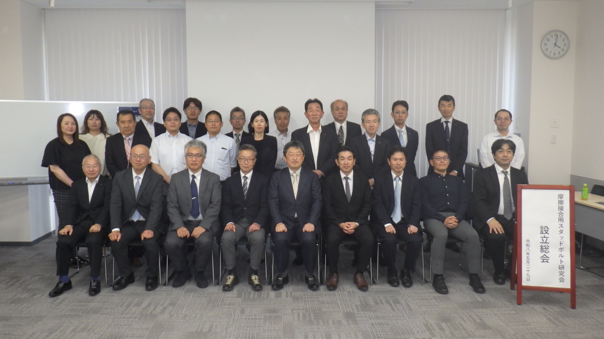

2026年5月29日、KITENA新大阪において、「摩擦接合用スタッドボルト研究会」の設立総会を開催しました。
総会では、会長に大阪公立大学の山口隆司教授、副会長に関西大学の石川敏之教授を選任するとともに、研究会規約、各役員の任命、今年度の委員会活動計画および予算案について審議を行い、いずれも承認されました。
今後は、高強度スタッドボルトを用いた鋼橋の補修・補強技術について、設計、製作、施工、維持管理に関する情報共有を進め、品質確保と技術開発に取り組んでまいります。
総会終了後には、出席者による記念撮影を行いました。
